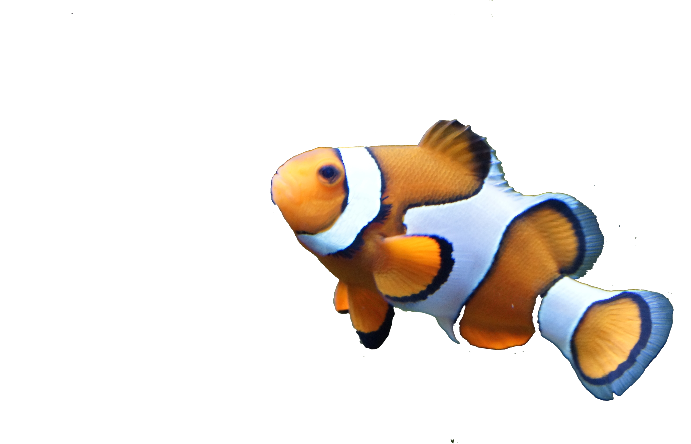
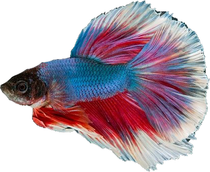
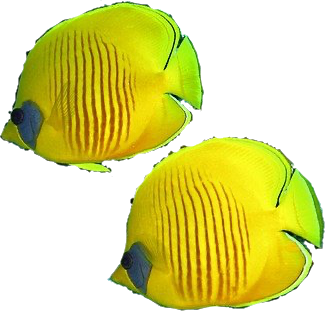

SITES TO VISIT IN KAUAI
ROUGHLY IN ORDER
  
Opaekaa Falls
Off a bus route on the left, this is a perfect start to the trip near the airport. Less than half a mile total, super short. Maybe swim in the falls if you're in the mood.

Wailua Falls
Can see this from the road. Also less than half a mile total. Really short but a little steep.

Kuilau Ridge Trail
It is a drive above opaekaa falls. Just under 4 miles total. There is a waterfall.

Sleeping Giant Hike
Very good during golden hour, great view of valley and town.

Ho'opi'i Falls Trail
Has a great waterfall area that you can jump into at the first falls. Then, there is a lagoon you can swim in before the real falls, with a rope swing. Is a short trail, 2 miles total. Parking at the trailhead.

Makaleha Falls Hike
Another water area that is great for jumping and swimming. About 3 miles total.

Waialeale Blue Hole Hike
Most insane and awesome site to see in Kauai. This is a difficult one though -> You need to make sure it is on a day with good weather. Also, need to hire a guide for this if you're not very skilled. The weeping wall is a very sacred place for natives.

Moloaa Bay
This is a potential stop a little north of the island off the bus route to hang out and swim.

Kilauea Point National Wildlife Refuge
Another potential stop. Entry is 10$, and has to be paid for beforehand. Great to see Wildlife.

Honopu Ridge Trail
This is a very popular one and rightly so. Also, compatible with dogs. Around 4.5 miles total and pretty tough.

Awaawapuhi Trail
Another really great one that is also popular. Compatible with dogs as well. Around 6.5 miles total so pretty long.

Nu'alolo Ridge Trail
This one is a little more difficult than the others. Still popular. Around 7.5 miles total. Can be very muddy

Waimea Canyon Trail to Waipo’o Falls Trail
This one is amazing and holds some crazy views. Begin at the canyon trail and then head to the waipoo falls trail. Just under 3.5 miles total, so not bad.

Kalepa Ridge Trail
Definitely one of the more difficult, but easily one of the most famous. It's short and steep, just under 2 miles total. 5$ to park at bottom.

Kalalau Trail
My favorite one by far. Listed as one of the most dangerous trails in the world. You will need a 20$/day hiking permit. There's a quaint beach at the end that's only accessable by the trail; probably gonna want to sleep here. Carve out atleast two days for this. 22 miles total. Scariest part is Crawler's Edge. You have to register parking and Reservations here beforehand.

Hanakapiai Falls
Beautiful waterfall, off the Kalalau trail. From the parking lot, it's around 8 miles total, but off the Kalalau Trail it's around 4 miles total.

Queens Bath
Easy to get to, great place for swimming and relaxing. Just under 1 mile total.

Waiahuakua Sea Cave
Really awesome to see. Gonna need a boat or a kayak. A full tour of the Napali Coast and caves is around 150/person. Click here to reserve.

Okolehao Trail
Pretty hike. Fairly steep, but not too bad. Compatible with dogs. Just under 3 miles total. You can go to the Hihimanu Trail from this trail, then it will be about 5.5 miles total and really really steep.

Manawaiopuna Falls (Jurassic Park Waterfall)
You're not allowed to go here, but it's cool to know it's on Kauai.
.png)